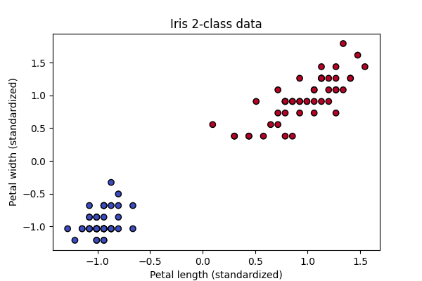
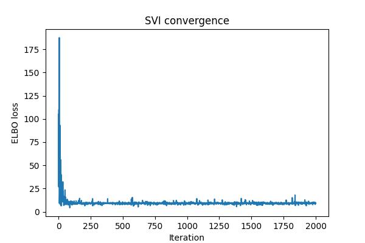
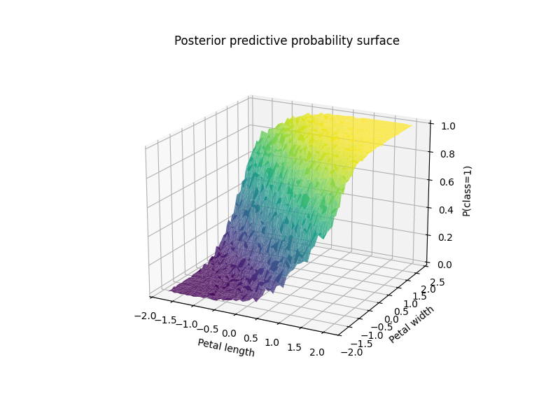

Outputs of Pyro training on a two dimensional subset of iris
So far in these tutorials we have mostly looked at deterministic models, models that provide one output. For example the model might return an expected value such as \(\mathbb{E}[P(y|x)]\) in regression or a point estimate such as \(\arg\max P(y|x)\) in classification. In these settings, the goal is to compute a specific value or class label given the inputs.
In Bayesian inference, by contrast, the goal is to estimate an entire distribution rather than a single value or class, and models of this form are therefore called probabilistic models. We begin with a joint distribution \(P_{\theta}(x,z)\) where x denotes the observed data, z denotes latent variables (which may represent unobserved data or model parameters), and \(\theta\) denotes fixed model parameters. Bayesian methods are particularly useful when data are scarce or partially missing, or when strong prior knowledge about the data-generating process is available. To model this uncertainty explicitly, we assume that the latent variables follow specified probability distributions. The goal of Bayesian inference is then to compute the posterior distribution:
The issue here is that the marginal likelihood takes the form:
Which is usually intractable (sometimes it is solvable by hand but even in simple cases like this one from wikipedia the derivation can be quite lengthy). Pyro solves this by providing ways to approximate or sample from this posterior, with support for PyTorch and a wide variety of probability distributions. In order to understand what Pyro accomplishes we will start with the background theory first and then work our way towards some examples. First we want to say that you do not need to be comfortable with measure theory to use Pyro; the point of this perspective is simply to make precise what it means for a program to define a distribution. To start recall that from basic probability that a random variable Z is a function from an outcome space \(\Omega\) to \(\mathbb{R}\) and from a measure theory perspective \((\Omega,\mathcal{F},\mathbb{P})\) is a probability space and \(Z:\Omega\rightarrow \mathcal{Z}\), i.e. the distribution of Z is the pushforward measure \(\mu_{Z}(A)=\mathbb{P}(Z\in A)\). So already "probability = measure induced by a function" and Pyro generalises this to "the function is a program".
So if we have a probabilistic program Pyro will consider it a function, a function that takes no randomness as input, internally calls random samplers and returns values and samples. Below is a basic example:
def model():
z = sample(Normal(0,1))
x = sample(Normal(z,1))
return x
Each time we run this program we are sampling concrete values that follow a concrete control-flow path. In the example above we sample z and then use z as the mean to sample x. What this means conceptually is that each execution is an outcome, e.g. \(\omega=(z,x)\), where \(\omega\in\Omega\), where \(\Omega\) is the space of all execution traces. Each execution trace also corresponds to a random vector. In our example above we just have z and x which gives us the vector mapping \((Z,X):\Omega\rightarrow\mathbb{R}\). If the program has loops or recursion this vector may be of variable length or possibly of infinite dimension. The program also induces a joint measure as it specifies how values are sampled, in what order and with what dependencies. In our example the joint probability measure would be \(\mu_{\theta}(dz,dx)\). It is important to note that the measure is not written explicitly it is defined operationally by the program and this is why we say "the model defines a distribution of execution traces". Another important thing to note is that this is more general than graphical models such as Bayesian networks as they have a fixed number of variables and fixed dependency graph, whereas a probabilistic program has a random number of variables and a control flow that depends on randomness. A small example program of this can be seen below:
n = sample(Poisson(3))
for i in range(n):
z_i = sample(Normal(0,1))
Suppose we also have observed values such as below:
x = sample(Normal(z,1), obs=1.5)
We are conditioning the joint measure on X=1.5 and thus the posterior is:
This is just the measure-theoretic analogue of Bayes’ rule; the denominator is the normalising constant ensuring the result is a probability measure. So conditioning doesn't modify the program it modifies the measure it induces. Similarly this means that we can mix discrete and continuous variables (only modifies the measure not the program). The final case to consider is with control flow which we will illustrate with the example below:
k = sample(Bernoulli(0.5))
if k == 1:
z = sample(Normal(0,1))
else:
z = sample(Gamma(2,2))
Here the type of z depends on k which means the support can change. Mathematically the sample space is \(\Omega=\{0\}\times\mathbb{R}^{+}\cup\{1\}\times\mathbb{R}\) and the measure is:
This can't be represented as a single density on \(\mathbb{R}^{2}\) but as a measure it is totally fine. So through this framework Pyro is able to handle a very general set of probability densities and Pyro models can be best thought of as "program \(\rightarrow\) measure on traces".
Now we understand how Pyro models probability through programs we can move on to how it finds the posterior (\(P_{\theta}(z|x)\)) for bayesian inference. Pyro accomplishes this through SVI (stochastic variational inference) which optimises over distributions, i.e. instead of computing the posterior, we search for the closest distribution within a chosen variational family of distributions. The posterior is an element of \(\mathcal{P}(\mathcal{Z})=\{\text{all probability measures on }\mathcal{Z}\}\), which is infinite dimensional and not parameterisable in general, thus you can not optimise over this space directly (intuitively, this space is too large to search directly). What choosing a variational family means is we choose a restricted family \(\mathcal{Q}=\{q_{\phi}(z):\phi\in\Phi\}\), then solve \(q_{\phi}^{*}=\arg\min_{q\in\mathcal{Q}}\text{KL}(q||p_{\theta}(\cdot|x))\) (we place q first in the formula as this enforces mode seeking (maximums of distributions) and zero forcing (if q(z)>0 then p(z|x) must be >0)), which is a projection problem in probability space where we are projecting onto a smaller set (Here KL is the KL divergence between probability distributions). It is also important to note here that \(q_{\phi}\) is a measure induced by a program and when using Pyro this is induced by the guide program (which we will soon see) (the model programs we saw above induce \(P_{\theta}(x,z)\)).
The most common variational aproximation in explicit graphical models for \(q_{\phi}(z)\) is some sort of factorised approximation of the posterior distribution. The example here is from the wikipedia article that was referenced earlier, also note that we don't take expectations as we are not explicitly calculating anything (refer to the mean field approximation here (mean field approximation is also commonly used in Pyro)). However here it is not a formula but again a program like with the model, so choosing a variational family means choosing a class of programs indexed by \(\phi\).
The next step is figuring out how to maximise the log-likelihood of observations x but with \(q_{\phi}(z|x)\). We shall do this by deriving the ELBO (evidence lower bound, also the linked article is a good introduction to bayesian statistics and ELBO):
From this it's not too hard to show:
And:
Note that \(\mathcal{H}(\cdot)\) is the Shannon entropy and that \(\mathcal{L}\) sets a lower bound for the evidence of observations and maximising \(\mathcal{L}\) will push up the log-likelihood of x (hence the name ELBO). So maximising ELBO is equivalent to minimising the KL divergence, the KL divergence becomes our loss function for optimisation.
The expectation in the KL divergence is usually intractable and so we use stochastic optimisation to approximate it. We sample \(z^{(k)}\sim q_{\phi}\) and then approximate:
Now the issue becomes how to take the gradient with respect to the parameters as we have \(\mathcal{L}(\phi)=\mathbb{E}_{q_{\phi}(z)}[f(z)]=\mathbb{E}_{q_{\phi}(z)}[\log p_{\theta}(x,z)-\log q_{\phi}(z)]\). There are two ways of doing this, the first being a reparameterisation trick. For this we rewrite samples as \(z=g_{\phi}(\epsilon)\) with \(\epsilon\sim p(\epsilon)\) and thus \(p(\epsilon)\) does not depend on \(\phi\) and all \(\phi\) dependence is in a deterministic function which allows us to write \(\mathbb{E}_{q_{\phi}(z)}[f(z)]=\mathbb{E}_{\epsilon\sim p}[f(g_{\phi}(\epsilon))]\). This allows us to take the gradient inside of the expectation to get:
This is Pyro's preferred estimator whenever possible, however if you can not reparameterise (possibly due to discrete variables, combinatorial structures or stochastic control flow) then z is sampled directly from \(q_{\phi}\). When it can't be reparameterised Pyro uses the score function estimator which we will now derive:
Neither estimator is universally better; the choice is dictated by the structure of the model and the support of the latent variables.
As before, we approximate the ELBO expectation using Monte Carlo sampling, drawing samples from the variational distribution and averaging to estimate the expectation. This estimator has variance, and Pyro implements several techniques to reduce it. Since this is a beginner tutorial, we only briefly mention them here: learned or estimated baselines, minibatching, Rao–Blackwellisation, and exact enumeration for discrete variables with small support.
Before diving into these methods Rao–Blackwellisation refers to a general variance–reduction principle: if part of an estimator can be computed as a conditional expectation rather than sampled, then doing so produces an estimator with lower variance (Rao–Blackwell theorem). In Pyro, this idea appears whenever random variables are analytically marginalised instead of sampled. Examples include enumerating discrete latent variables with small support, computing certain KL terms in closed form, and exploiting conditional independence via a primitive pyro.plate (discussed later) to enable exact summation or message passing. In all cases, Pyro replaces unnecessary sampling with exact expectations, resulting in more stable gradient estimates and faster convergence.
Two distinct factorisations are important to keep in mind. First, when the model factorises over data points, the KL term can be written as a sum of per-data contributions. This allows minibatches to approximate gradients of the full KL, enabling scalable stochastic optimisation.
Second, under a mean-field variational assumption, the variational distribution factorises over latent variables. This induces a decomposition of the KL into a global term and a sum of local terms, where the local KLs arise from the entropy of the local variational factors. This factorisation enables additional variance reduction via Rao–Blackwellisation, supports parallelism across nodes in the computational graph, and allows gradients from different data points to update shared global parameters.
In particular, assuming the local variational factors are conditionally independent given the global variables restricts the variational family, but makes the number of variational parameters independent of the data set size. As a result, learning signals from minibatches aggregate to update the same global parameters.
Finally, Pyro also supports MCMC-based inference as an alternative to SVI. Even in that setting, the separation into global and local structure remains useful, enabling parallelism and analytic marginalisation where possible. Below, we make this global–local decomposition explicit; the local terms arise from the Shannon entropy contribution in the ELBO.
Now we understand the basics of how Pyro works we can go through a few example uses of it. We'll start with training a simple classifier on a two dimensional subset of the iris dataset. This example will allow us to to visualise how using bayesian methods we don't get clean classification lines but probability distributions over classes. We'll start by defining our model (\(P_{\theta}(x,z)\)) as a linear model conditioned on a subset of the iris data whose variables are assumed to be distributed according to the standard normal distribution. In this example, the main Pyro primitives (and method) play the following roles:
pyro.sample() declares a random variable in the probabilistic program. When an observation is
provided via obs=y, no sampling occurs because the labels are known (for example, the iris
classes). Instead, the corresponding log-likelihood term
\( \log p(y \mid \ldots) \) is added to the ELBO.
.to_event(k) specifies the event dimensionality of the distribution:
k=1 denotes a random vector, k=2 a random matrix, and so on.
pyro.plate encodes conditional independence structure and tells Pyro how to safely vectorise
computations, rescale minibatches, and reduce estimator variance. This is the mechanism through which
Pyro performs the variance reduction techniques discussed earlier while preserving correct gradients.
pyro.param declares deterministic optimisation parameters (that is, variables to be optimised).
In this example these parameters appear in the guide, which mathematically defines the variational
distribution \( q_{\phi}(w, b) \). Under a mean-field approximation this factorises as
\( q(w, b) = q(w)\,q(b) \), with both \( w \) and \( b \) modelled as Gaussian random variables.
In a single SVI step, we first run the guide to sample \( w, b \sim q_{\phi} \). We then run the model to compute \( \log p(w, b, y) \). The ELBO contribution \( \log p(w, b, y) - \log q(w, b) \) is accumulated, gradients are estimated via Monte Carlo sampling, and finally the parameters declared with pyro.param are updated using PyTorch’s Adam optimiser.
def model(X, y=None):
w = pyro.sample("w", dist.Normal(torch.zeros(2), torch.ones(2)).to_event(1))
b = pyro.sample("b", dist.Normal(0.,1.))
logits = X @ w + b
with pyro.plate("data", X.shape[0]):
pyro.sample("obs", dist.Bernoulli(logits=logits), obs=y)
def guide(X, y=None):
w_loc = pyro.param("w_loc", torch.zeros(2))
w_scale = pyro.param("w_scale", torch.ones(2), constraint=dist.constraints.positive)
b_loc = pyro.param("b_loc", torch.tensor(0.))
b_scale = pyro.param("b_scale", torch.tensor(1.), constraint=dist.constraints.positive)
pyro.sample("w", dist.Normal(w_loc, w_scale).to_event(1))
pyro.sample("b", dist.Normal(b_loc, b_scale))
pyro.clear_param_store()
optimizer = Adam({"lr": 0.05})
svi = SVI(model, guide, optimizer, loss=Trace_ELBO())
losses = []
for step in range(2000):
loss = svi.step(X, y)
losses.append(loss)
if step % 400 == 0:
print(f"Step {step} | ELBO loss = {loss:.2f}")
Running the code we get the below outputs which show that it does somewhat learn a seperation line but it is according to the posterior predictive probability surface and thus isn't a hard coded one class or the other but probabilities.
In our next example we will solve a missing data problem, specifically MovieLens 100k which attempts to find missing entries in a ratings matrix \(R\in\mathbb{R}^{U\times M}\)( U is user by M movie). We model each entry as \(R_{ij}\sim\mathcal{N}(u_{i}^{T}v_{j},\sigma^{2})\) where \(u_{i}\in\mathbb{R}^{K}\) are the user embeddings and \(v_{j}\in\mathbb{R}^{K}\) are the movie embeddings (these are our latents) with our priors being \(u_{i},v_{j}\sim\mathcal{N}(0,I)\) (this is what our model function will capture). Conceptually users have only rated certain movies and thus there are a lot of missing entries for each user. Now for our guide program our mean field approximation is \(q(U,V,\sigma)=\prod_{i}q(u_{i})\prod_{j}q(v_{j})q(\sigma)\) where \(q(\sigma)\) is a dirac delta as \(\sigma\) is a positive scalar controlling the noise in the likelihood and a Delta distribution is equivalent to a maximum a posteriori estimate (learning a single optimal value for \(\sigma\)).
def model(user_ids, movie_ids, ratings, num_users, num_movies, K):
with pyro.plate("users", num_users):
U = pyro.sample(
"U",
dist.Normal(0., 1.).expand([K]).to_event(1)
)
with pyro.plate("movies", num_movies):
V = pyro.sample(
"V",
dist.Normal(0., 1.).expand([K]).to_event(1)
)
sigma = pyro.sample("sigma", dist.Exponential(1.0))
with pyro.plate("data", len(ratings)):
u = U[user_ids]
v = V[movie_ids]
mean = (u * v).sum(-1)
pyro.sample(
"ratings",
dist.Normal(mean, sigma),
obs=ratings
)
# ----------------------------
# Guide (mean-field VI)
# ----------------------------
def guide(user_ids, movie_ids, ratings, num_users, num_movies, K):
U_loc = pyro.param(
"U_loc",
torch.zeros(num_users, K)
)
U_scale = pyro.param(
"U_scale",
torch.ones(num_users, K),
constraint=dist.constraints.positive
)
V_loc = pyro.param(
"V_loc",
torch.zeros(num_movies, K)
)
V_scale = pyro.param(
"V_scale",
torch.ones(num_movies, K),
constraint=dist.constraints.positive
)
sigma_loc = pyro.param(
"sigma_loc",
torch.tensor(1.0),
constraint=dist.constraints.positive
)
with pyro.plate("users", num_users):
pyro.sample("U", dist.Normal(U_loc, U_scale).to_event(1))
with pyro.plate("movies", num_movies):
pyro.sample("V", dist.Normal(V_loc, V_scale).to_event(1))
pyro.sample("sigma", dist.Delta(sigma_loc))
# ----------------------------
# Train
# ----------------------------
pyro.clear_param_store()
optimizer = Adam({"lr": LR})
svi = SVI(model, guide, optimizer, loss=Trace_ELBO())
print("Training...")
for step in range(NUM_STEPS):
loss = svi.step(
train_users, train_movies, train_ratings,
num_users, num_movies, K
)
if step % 500 == 0:
print(f"Step {step:4d} | ELBO loss: {loss:.2f}")
Running this we end up with a RMSE of 0.9676, so it has done a good job of finding the missing values in the matrix. The next example we will look at is finding good estimates for model parameters when we don't have much data but have a good idea of the data generating process. For this we will use the eight schools dataset, where there are 8 schools running a coaching program for SAT students. For each school we observe \(y_{i}\) (the estimated treatment effect) and \(\sigma_{i}\) the standard error of the estimate. We model this as a hierarchical Bayes model with \(\mu_{0}\sim\mathcal{N}(0,5^{2})\) (average treatment effect across all schools), \(\tau\sim\)Half-Cauchy(5) (between school variability), \(\theta_{i}\sim\mathcal{N}(\mu_{0},\tau^{2})\) (the true effect of the coaching program for school i) and \(y_{i}\sim\mathcal{N}(\theta_{i},\sigma_{i}^{2})\) (Note we use 5 as we are saying we expect there to be no effect but +-15 is plausible). Below we set up our model and guide and train using SVI:
# ----------------------------
# Eight Schools data
# ----------------------------
y = torch.tensor([28., 8., -3., 7., -1., 1., 18., 12.]) # treatment effects
sigma = torch.tensor([15., 10., 16., 11., 9., 11., 10., 18.]) # standard errors
num_schools = len(y)
# ----------------------------
# Hierarchical model
# ----------------------------
def model(y, sigma):
mu0 = pyro.sample("mu0", dist.Normal(0., 5.))
tau = pyro.sample("tau", dist.HalfCauchy(scale=5.))
with pyro.plate("schools", num_schools):
theta = pyro.sample("theta", dist.Normal(mu0, tau))
pyro.sample("obs", dist.Normal(theta, sigma), obs=y)
# ----------------------------
# Guide (mean-field)
# ----------------------------
def guide(y, sigma):
mu0_loc = pyro.param("mu0_loc", torch.tensor(0.))
mu0_scale = pyro.param("mu0_scale", torch.tensor(1.), constraint=dist.constraints.positive)
tau_loc = pyro.param("tau_loc", torch.tensor(1.), constraint=dist.constraints.positive)
pyro.sample("mu0", dist.Normal(mu0_loc, mu0_scale))
pyro.sample("tau", dist.HalfCauchy(tau_loc))
theta_loc = pyro.param("theta_loc", torch.zeros(num_schools))
theta_scale = pyro.param("theta_scale", torch.ones(num_schools), constraint=dist.constraints.positive)
with pyro.plate("schools", num_schools):
pyro.sample("theta", dist.Normal(theta_loc, theta_scale))
# ----------------------------
# SVI setup
# ----------------------------
pyro.clear_param_store()
optimizer = Adam({"lr": 0.03})
svi = SVI(model, guide, optimizer, loss=Trace_ELBO())
# ----------------------------
# Training
# ----------------------------
num_steps = 5000
for step in range(num_steps):
loss = svi.step(y, sigma)
if step % 500 == 0:
print(f"Step {step:4d} | ELBO loss: {loss:.2f}")
After training we get the following plot which shows the mean and standard deviation of the posterior distribution \(q(\theta|y)\approx\mathcal{N}(\text{mean}_{i},\text{std}_{i}^{2})\).
For our final example we will show the true potential of Pyro by training a DMM (similar to an RNN but all recurrence occurs through the latent Markov structure). For this example we will use synthetic time series data generated by \(z_{t}=\sin(0.2t)+0.05t\), where observations are noisy \(x_{t}=z_{t}+\epsilon_{t}\), \(\epsilon_{t}\sim\mathcal{N}(0,0.5^{2})\). We are going to use a DMM (deep markov model) to model this time series. It is Markovian in the latent space so it makes it a natural candidate for a latent state space model. We start by having a gated transition, for a latent transition \(p(z_{t}|z_{t-1})\) (\(z_{t}\sim\mathcal{N}(\mu_{t},\sigma_{t}^{2})\)) we compute a gate \(g_{t}\in(0,1)\) as \(g_{t}=\sigma(W_{g}z_{t-1}+b_{g})\). We then compute a proposed mean via an MLP (\(\tilde{\mu}_{t}=f_{\text{prop}}(z_{t-1})\)) and blend it to get \(\mu_{t}=(1-g_{t})z_{t-1}+g_{t}\tilde{\mu}_{t}\). The gating mechanism allows the model to interpolate between near-identity (linear) dynamics and highly nonlinear transitions, enabling stable learning early in training while still permitting expressive dynamics later. Also note we use softplus to ensure positivity so the transition scale is parameterized as a positive function of the proposed mean rather than via a separate network, reducing parameter count while remaining sufficiently expressive in low-dimensional latent spaces. All this is implemented in code below:
class GatedTransition(nn.Module):
def __init__(self, z_dim, hidden_dim):
super().__init__()
self.lin_gate = nn.Linear(z_dim, hidden_dim)
self.lin_gate_out = nn.Linear(hidden_dim, z_dim)
self.lin_prop = nn.Linear(z_dim, hidden_dim)
self.lin_prop_out = nn.Linear(hidden_dim, z_dim)
self.lin_z = nn.Linear(z_dim, z_dim)
self.lin_z.weight.data = torch.eye(z_dim)
self.lin_z.bias.data.zero_()
self.relu = nn.ReLU()
self.sigmoid = nn.Sigmoid()
self.softplus = nn.Softplus()
def forward(self, z_prev):
gate = self.sigmoid(self.lin_gate_out(self.relu(self.lin_gate(z_prev))))
prop_mean = self.lin_prop_out(self.relu(self.lin_prop(z_prev)))
loc = (1 - gate) * self.lin_z(z_prev) + gate * prop_mean
scale = self.softplus(prop_mean) + 1e-4
return loc, scale
The next part of this model is the emitter which maps latent \(z_{t}\) to a mean for \(x_{t}\) via an MLP. The emitter thus parameterizes the conditional likelihood \(p(x_{t}|z_{t})\), separating the latent dynamics from the observation noise model.
class Emitter(nn.Module):
def __init__(self, z_dim, hidden_dim, x_dim):
super().__init__()
self.net = nn.Sequential(
nn.Linear(z_dim, hidden_dim),
nn.ReLU(),
nn.Linear(hidden_dim, hidden_dim),
nn.ReLU(),
nn.Linear(hidden_dim, x_dim)
)
def forward(self, z):
return self.net(z)
The next part of the model is the combiner which parameterises the variational conditional distribution \(q(z_{t}|z_{t-1},x_{t:T})\) which forms the basic building block of the guide. The RNN provides a summary \(h_{t}\) of the observations from time t onward, while the previous latent \(z_{t-1}\) enforces temporal consistency. The Combiner merges these two information sources to produce the mean and scale of a diagonal Gaussian approximation to the true posterior. The hidden state is formed as a symmetric combination of a nonlinear transformation of \(z_{t-1}\) and the RNN hidden state, ensuring that neither the latent dynamics nor the observations dominate inference in early training.
class Combiner(nn.Module):
def __init__(self, z_dim, rnn_dim):
super().__init__()
self.lin_z_to_hidden = nn.Linear(z_dim, rnn_dim)
self.lin_hidden_to_loc = nn.Linear(rnn_dim, z_dim)
self.lin_hidden_to_scale = nn.Linear(rnn_dim, z_dim)
self.tanh = nn.Tanh()
self.softplus = nn.Softplus()
def forward(self, z_prev, h_rnn):
h_comb = 0.5 * (self.tanh(self.lin_z_to_hidden(z_prev)) + h_rnn)
loc = self.lin_hidden_to_loc(h_comb)
scale = self.softplus(self.lin_hidden_to_scale(h_comb)) + 1e-4
return loc, scale
Next we implement the DMM class which implements both the model and guide. The key structure of a DMM is a latent Markov model \(p(z_{1:T},x_{1:T})=\prod_{t=2}^{T}p(z_{t}|z_{t-1})\prod_{t=1}^{T}p(x_{t}|z_{t})\) where \(z_{0}\) is a learned initial state. Beginning with the model the initial latent state is represented by a learnable parameter \(z_{0}\), which serves as the conditioning input for the first latent transition p(z_{1}|z_{0}). For the rest of the time series we compute the gated transition from the previous latent (producing a Gaussian transition distribution via the gated transition network) and the observation emission from the emitter network (this gives the noise). We also use pyro.poutine.scale(scale=annealing_factor) around latent sampling statements, which effectively anneals the KL contribution during early training while leaving the likelihood terms unchanged.
For the guide we will learn a single parametric function \(f(X_{1:T})\) and internally work with a factorisation of the form \(q(z_{1:T}|x_{1:T})=q(z_{1}|x_{1:T})\prod_{t=2}^{T}q(z_{t}|z_{t-1},x_{t:T})\). Also note we set up our RNN to "consume" the observations from right to left as this makes our conditional distribution depend on two things, the latent \(z_{t-1}\) and the observations \(x_{t:T}\) (current observation with all future observations). Note that the RNN is used only in the variational guide and does not appear in the generative model, ensuring that temporal dependencies are learned through the latent Markov structure rather than the observations themselves. This asymmetry is standard in variational inference: the guide may be more expressive than the model because it is only used to approximate the posterior. This choice mirrors the conditional independence structure of the true posterior in a latent Markov model, where inference at time t depends on the current latent state and all future observations.
class DMM(nn.Module):
def __init__(self):
super().__init__()
self.trans = GatedTransition(z_dim, hidden_dim)
self.emitter = Emitter(z_dim, hidden_dim, x_dim)
self.combiner = Combiner(z_dim, rnn_dim)
self.rnn = nn.RNN(input_size=x_dim, hidden_size=rnn_dim,
nonlinearity='relu', batch_first=True,
bidirectional=False)
# Learnable initial latents
self.z_0 = nn.Parameter(torch.zeros(z_dim))
self.z_q_0 = nn.Parameter(torch.zeros(z_dim))
self.h_0 = nn.Parameter(torch.zeros(1, 1, rnn_dim))
# Model
def model(self, x_seq, annealing_factor=1.0):
T = x_seq.size(0)
pyro.module("dmm", self)
z_prev = self.z_0
obs_scale = pyro.param("obs_scale", torch.tensor(1.0),
constraint=constraints.positive)
for t in range(T):
z_loc, z_scale = self.trans(z_prev)
with pyro.poutine.scale(scale=annealing_factor):
z_t = pyro.sample(f"z_{t}", dist.Normal(z_loc, z_scale).to_event(1))
x_loc = self.emitter(z_t)
pyro.sample(f"x_{t}", dist.Normal(x_loc, obs_scale).to_event(1),
obs=x_seq[t])
z_prev = z_t
# Guide
def guide(self, x_seq, annealing_factor=1.0):
pyro.module("dmm", self)
T = x_seq.size(0)
h_0_contig = self.h_0.expand(1, 1, self.rnn.hidden_size).contiguous()
rnn_out, _ = self.rnn(x_seq.unsqueeze(0), h_0_contig)
rnn_out = rnn_out.squeeze(0)
z_prev = self.z_q_0
for t in range(T):
z_loc, z_scale = self.combiner(z_prev, rnn_out[t])
with pyro.poutine.scale(scale=annealing_factor):
z_t = pyro.sample(f"z_{t}", dist.Normal(z_loc, z_scale).to_event(1))
z_prev = z_t
Then training the model as usual with SVI, albeit with the caveat that we use Adam with gradient clipping as our optimiser to avoid classic issues with training RNNs, we eventually end up with the following output:
As you can see from the background theory and examples discussed in this tutorial Pyro is an extremely powerful library for stochastic variational inference and you can find further tutorials on the official Pyro tutorials webpage.